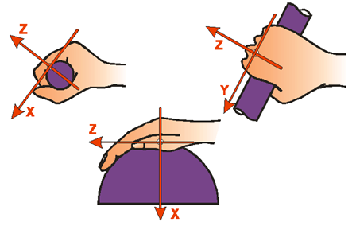
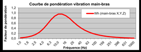
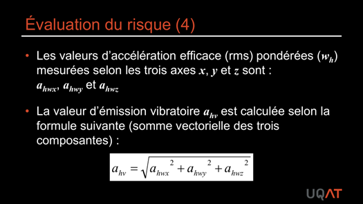
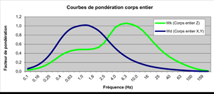
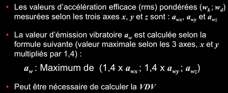
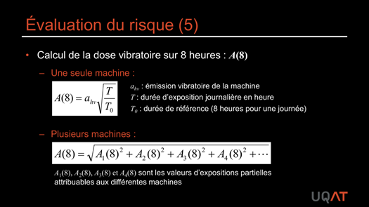
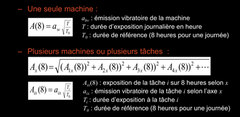
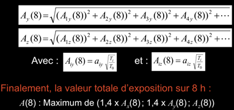

Vibrations
Les vibrations transmises au corps humain se divisent en deux catégories aux effets distincts : vibrations mains-bras (outils portatifs) et vibrations corps entier (engins, postes vibrants). Au Québec, il n'y a pas de valeur réglementaire spécifique pour les vibrations, mais la directive européenne 2002/44/EC fournit des seuils utilisés en pratique. En mine, les deux types sont omniprésents.
Table des matières
- Deux catégories
- Vibrations mains-bras
- Vibrations corps entier
- Évaluation du risque
- Réduction du risque
- Cadre réglementaire
- Application terrain
- Ressources
Deux catégories
L'exposition aux vibrations est classée en deux sous-catégories aux effets distincts
| Catégorie | Transmission | Source typique |
|---|---|---|
| Mains-bras (segmentaires) | Par la paume et les doigts | Outils portatifs vibrants |
| Corps entier (globales) | Par l'assise ou les pieds | Engins, postes vibrants |
Vibrations mains-bras
Surtout associées à l'utilisation d'outils portatifs vibrants tenus à la main. Outils répartis en classes : rotatifs, percutants, roto-percutants.
Effets sur la santé
| Type d'atteinte | Manifestations |
|---|---|
| Vasculaire | Syndrome de Raynaud (doigts blancs) |
| Neurologique | Perte de sensation, ↓ force de préhension |
| Musculosquelettique | Tendinites, syndrome du tunnel carpien, etc. |
Syndrome (ou phénomène) de Raynaud
- Aussi appelé doigts blancs, doigts morts, vibration white finger.
- Causé par l'exposition aux vibrations (à distinguer de la maladie de Raynaud, congénitale).
- Attaques douloureuses de blanchiment des doigts, incapacitantes, picotements et engourdissement.
- Souvent déclenchées par l'exposition au froid.
- Période de latence : une à plusieurs années.
Évolution
- Symptômes réversibles au début (si arrêt de l'exposition).
- Atteinte irréversible par la suite.
- Cas extrêmes : cyanose et gangrène de l'extrémité des doigts.
Effet musculosquelettique indirect
Les vibrations mains-bras sont un cofacteur de TMS
- Phénomènes de résonance au niveau des Articulations.
- ↓ sensibilité des doigts → ↑ force de préhension compensatoire.
- Réflexe tonique vibratoire (contraction réflexe).
Vibrations corps entier
Transmises à la colonne vertébrale par l'assise ou les pieds.
Sources typiques
- Chariots élévateurs, transpalettes.
- Véhicules de chantier.
- Véhicules miniers (camions, chargeuses, scoop, transporteurs de personnel).
- Véhicules de transport routier.
Effets sur la santé
| Domaine | Atteinte |
|---|---|
| Lombaire | Lombalgies, hernies discales, dégénérescence précoce |
| Posture aggravante | Posture assise prolongée et torsion du tronc |
| Autres | Problèmes digestifs, troubles du sommeil |
Voir Anatomie et biomécanique du dos pour la structure lombaire vulnérable.
Évaluation du risque
Mesure
Les vibrations sont mesurées selon trois directions orthogonales (x, y, z) à l'aide d'un accéléromètre triaxial.
{kind=link}

Toucher l'image pour l'agrandirMains-bras : accéléromètre fixé à la poignée ou au corps de l'outil, le plus près possible de la main. Fréquences pertinentes : 4 Hz à 2000 Hz. Pondération fréquentielle tenant compte de la sensibilité de la main.
{kind=link}

Toucher l'image pour l'agrandir{kind=link}

Toucher l'image pour l'agrandirCorps entier : accéléromètre entre l'assise et le travailleur, ou au plancher (travailleur debout). Fréquences pertinentes : 0,5 Hz à 125 Hz. Pondération différente selon l'axe vertical (z) et les axes latéraux (x, y).
{kind=link}

Toucher l'image pour l'agrandir{kind=link}

Toucher l'image pour l'agrandirCalcul de la dose
Dose vibratoire sur 8 heures : A(8)
{kind=link}

Toucher l'image pour l'agrandirPour les vibrations corps entier, calcul similaire sur chaque axe.
{kind=link}

Toucher l'image pour l'agrandir{kind=link}

Toucher l'image pour l'agrandirVDV (Valeur de Dose Vibratoire) : utilise le signal à la puissance 4 plutôt qu'à la puissance 2. Mieux pour les impacts, chocs, contrecoups. Obligatoire si le facteur crête du signal pondéré dépasse 9.
Réduction du risque
Vibrations mains-bras
- Utiliser d'autres méthodes de travail (ex. meuleuse plutôt que marteau pneumatique).
- Choisir des modèles d'outils moins vibrants (poignées antivibratiles, systèmes antivibratiles intégrés).
- Réduire le temps d'exposition.
- Garder les mains au chaud et à l'abri de l'humidité (éviter échappement d'air froid, contact direct avec métal froid).
- Limiter les forces de préhension et de poussée au minimum nécessaire.
- Entretien régulier des outils (lubrification, affûtage, équilibrage).
- Opérer les outils pneumatiques à la pression recommandée.
- Rotation de postes, périodes de récupération.
- Équilibreurs pour compenser le poids des machines.
- Gants antivibratiles homologués ISO 10819 (avec mise en garde : pas de protection contre les impacts ni contre les basses fréquences < 200 Hz).
Vibrations corps entier
- Minimiser les mauvaises postures pendant la conduite.
- Éviter position assise prolongée sans changement.
- Éviter levage de charges lourdes après exposition (voir Manutention manuelle).
- Entretien du sol (nids de poule), des pneus.
- Choisir machinerie moins vibrante.
- Rotation de poste, périodes de repos.
- Siège à suspension : adapté au type de véhicule, ajusté au poids de l'individu, entretenu (sinon peut amplifier au lieu d'atténuer).
- Cabine suspendue.
- Limiter vitesse, minimiser distances.
- Améliorer visibilité depuis la cabine (éviter torsion du cou).
Cadre réglementaire
Au Québec : pas de réglementation spécifique pour les vibrations. Voir le wiki Droit du travail pour les obligations générales.
Directive européenne 2002/44/EC (référence pratique au Québec)
| Type | Seuil d'action | Seuil limite |
|---|---|---|
| Mains-bras A(8) | 2,5 m/s² | 5,0 m/s² |
| Corps entier A(8) | 0,5 m/s² (ou VDV 9,1 m/s^1,75) | 1,15 m/s² (ou VDV 21 m/s^1,75) |
Estimation de l'exposition sans mesure : littérature, guides de bonnes pratiques, bases de données fabricants, retours des travailleurs (picotements, identification des outils problématiques). Outil OSEV (INRS) téléchargeable.
Application terrain
Le secteur minier est l'un des plus exposés aux vibrations, et l'un des champs d'intervention les plus actifs.
Postes vibrations mains-bras en mine
| Poste | Outil typique |
|---|---|
| Foreur, profil RPS et leadership de chantier jumbo | Marteau perforateur, foreuse hydraulique |
| Mineur de soutènement | Marteau-piqueur, écailleur pneumatique |
| Boulonneur | Boulonneuse, marteau d'ancrage |
| Mécanicien | Outils pneumatiques (clés à choc), meuleuses |
| Soudeur | Burins, meuleuses |
Postes vibrations corps entier en mine
| Poste | Véhicule |
|---|---|
| Opérateur de camion souterrain | Camion sur sol irrégulier |
| Opérateur de scoop (chargeuse souterraine) | Chargeuse hydraulique |
| Conducteur de transporteur de personnel | Sur galeries inégales |
| Opérateur de jumbo | Plateforme du jumbo |
| Conducteur de surface (camion 240 tonnes) | Camion minier de fosse |
Cofacteurs en mine
- Quarts de 12 h : doublement de l'exposition cumulée par rapport à un quart standard.
- Froid : aggrave les effets vasculaires.
- Manutention (pour toi) post-vibrations : fenêtre de fragilité lombaire.
- Combinaison avec bruit (voir Bruit en milieu de travail dans le wiki Hygiène) : effet ototoxique cumulé.
Pratiques recommandées en mine
- Programme d'achat orienté faible vibration (critère contractuel).
- Sièges à suspension calibrés au poids du conducteur (calibrage régulier).
- Cabines isolées des vibrations sur engins miniers.
- Rotation de tâches pour limiter l'exposition cumulée.
- Pause obligatoire entre fin de conduite et début de manutention.
- Surveillance régulière (questionnaires, recherche de signes de Raynaud) pour les opérateurs d'outils vibrants.
Ressources
| Document | Type | Source |
|---|---|---|
| Cours SST 1162 - S7 - Exposition aux vibrations | Cours | UQAT |
| Directive européenne 2002/44/EC | Loi | UE |
| Norme ISO 10819 (gants antivibratiles) | Norme | ISO |
| Norme ISO 5349 (mains-bras) et ISO 2631 (corps entier) | Norme | ISO |
| Base de données vibration UMU | Outil | Université Umeå |
| Outil OSEV | Outil | INRS |
Articles wiki connexes